Aplicații ale integralei definite
Aria unei suprafețe plane
În acest paragraf se va defini noțiunea de „mulțime care are arie” și se va arăta că dacă avem funcția continuă 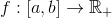, atunci subgraficul ei  este o mulțime care are arie, iar aria acesteia se va calcula cu ajutorul unei integrale definite.
este o mulțime care are arie, iar aria acesteia se va calcula cu ajutorul unei integrale definite.
Aria unei suprafețe plane
Înainte de a vedea cum se află aceste noțiuni, introducem următoarea definiție:
Definiția CI43: Mulțime elementară
Se numește mulțime elementară, o mulțime 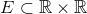, dacă 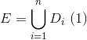, unde 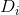 sunt reprezentate de suprafețele dreptunghiulare cu laturile respectiv paralele cu axele de coordonate, iar oricare două astfel de suprafețe, dar diferite, 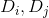, au interioarele disjuncte.
Prin definiție, vom avea că 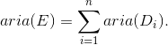
Definiția CI44: Mulțime care are arie
Fie 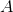 o mulțime mărginită din plan.
Spunem că mulțimea are arie, dacă sunt îndeplinite următoarele condiții:
- există două șiruri 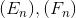 de mulțimi elementare, astfel încât să aibe loc incluziunile: 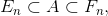 oricare ar fi 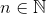;
- șirurile de numere reale pozitive 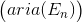 și 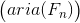 sunt convergente și are loc egalitatea: 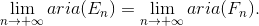
Putem astfel defini aria mulțimii  astfel:
astfel:
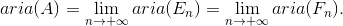
Având introduse aceste noțiuni, în cele ce urmează, ți se va putea arăta când o mulțimea plană mărginită oarecare are arie și cum se calculează aceasta.
Teorema CI45: Aria subgraficului unei funcții continue și pozitive
Fie funcția continuă și pozitivă 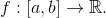
Atunci:
- mulțimea are arie;
- 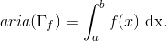
Exercițiu rezolvat:
Să se determine aria mulțimii 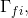 cu 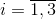, în cazurile:
- 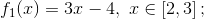
- 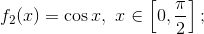
- 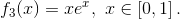
Rezolvare:
- Calculăm aria subgrafului funcției
 .
.
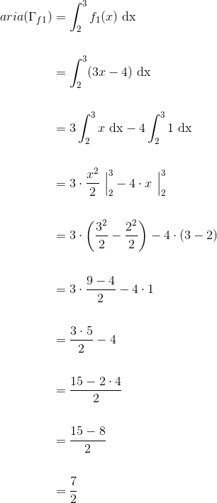
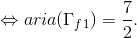
Aria acestui subgraf este reprezentată în figura de mai jos:

- Calculăm aria subgrafului funcției
 .
.
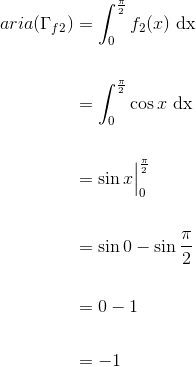
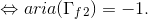
Subgraful 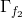 se reprezintă astfel:

- Calculăm aria subgrafului funcției 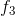.
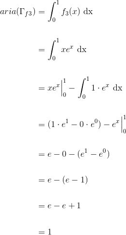
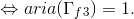
Graficul lui 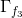 este următorul:

- Aria elipsei
Fie elipsa 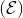, caracterizată de ecuația 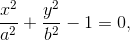 reprezentată grafic astfel:

Ne punem următoarea problemă: să determinăm aria suprafeței delimitate de elipsa , folosind integrala definită.
Funcțiile ale căror grafice descriu curba sunt următoarele:
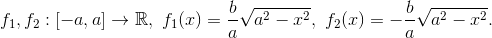
Cum funcțiile 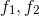 sunt două funcții pare, ne rezultă că aria suprafeței delimitate de elipsa este egală cu 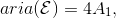 unde  este aria suprafeței hașurate în figura de mai sus.
este aria suprafeței hașurate în figura de mai sus.
Avem:
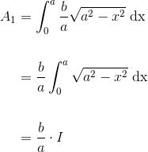
Integrala  este de tipul 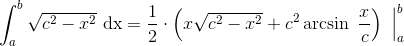 (lăsăm cititorul să verifice această relație, folosind metoda integrării prin părți).
este de tipul 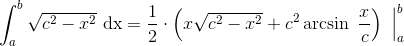 (lăsăm cititorul să verifice această relație, folosind metoda integrării prin părți).
Revenim la calculul ariei suprafeței 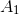 și obținem:
![\begin{align*} A_1&=\frac{b}{a} \cdot I \\\\&=\frac{b}{a}\cdot \frac{1}{2}\cdot \left ( x\sqrt{a^2-x^2}+a^2\arcsin \ \frac{x}{a} \right )\ \Big|_{0}^{a}\\\\&=\frac{b}{2a}\cdot\left ( a\sqrt{a^2-a^2}+a^2\arcsin \ \frac{a}{a} -0\sqrt{a^2-0^2}+a^2\arcsin \ \frac{0}{a}\right )\\\\&=\frac{b}{a}\cdot \frac{1}{2}\cdot\left ( a\cdot 0+a^2\arcsin \ 1 -0\cdot a+a^2\arcsin \ 0\right )\\\\&=\frac{b}{2a}\cdot\left ( 0+a^2\cdot \frac{\pi}{2} -0+a^2\cdot 0\right )\\\\&=\frac{b}{2a}\cdot \frac{a^2\pi}{2}\\\\&=\frac{ab\pi}{4} \end{align*}](../media/webbooks/404/2700/images/equations/sefxbd3a99czag50edwjdg==.gif)
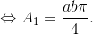
Astfel, putem calcula aria elipsei :
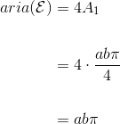
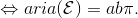
Observație:
Dacă am avea 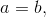 atunci elipsa devine cercul cu centrul în originea  și raza 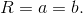 În acest caz, aria cercului se calculează astfel: 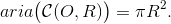
și raza 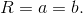 În acest caz, aria cercului se calculează astfel: 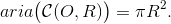
Aria suprafețelor plane cuprinse între două curbe
Teorema CI46: Aria suprafeței plane mărginite de graficele a două funcții continue
Fie funcțiile 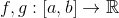 două funcții continue, care îndeplinesc condiția: 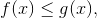 pentru orice 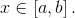
Atunci:
- mulțimea 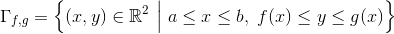 cuprinsă între graficele funcțiilor 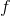,
 și dreptele de ecuații
și dreptele de ecuații  și
și  , are arie și aceasta este de forma 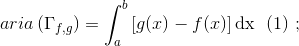
, are arie și aceasta este de forma 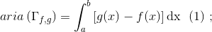 - dacă
 oricare ar fi atunci aria se calculează astfel:
oricare ar fi atunci aria se calculează astfel:
Aria mulțimii este reprezentată de partea hașurată a următorului grafic:

Exercițiu rezolvat:
Să se determine aria mulțimii pentru funcțiile oricare ar fi
Rezolvare:
Pentru început,reprezentăm grafic cele două funcții (cu roșu vom reprezenta funcția  , iar cu albastru funcția
, iar cu albastru funcția  ):
):
.png)
Partea hașurată a graficului de mai sus reprezintă aria mulțimii (așa cum este și indicat pe figură).
Calculăm aria mulțimii , folosind formula (1) din Teorema CI46: Aria suprafeței plane mărginite de graficele a două funcții continue:
![\begin{align*} aria \left ( \Gamma _{f,g} \right )&=\int_{1}^{4}\left [ g(x)-f(x) \right ]\mathrm{dx}\\\\&=\int_{1}^{4}\left [ (2x-4)-(x^2-3x) \right ]\mathrm{dx}\\\\&=\int_{1}^{4}(2x-4-x^2+3x)\mathrm{dx}\\\\&=\int_{1}^{4}(-x^2+5x-4)\mathrm{dx}\\\\&=\left ( -\frac{x^3}{3}+5\cdot \frac{x^2}{2}-4x \right )\Big|_1^4\\ \\&=\left ( -\frac{4^3}{3}+5\cdot \frac{4^2}{2}-4\cdot 4 \right )-\left ( -\frac{1^3}{3}+5\cdot \frac{1^2}{2}-4\cdot 1 \right )\\\\&=\left ( -\frac{64}{3}+40-16 \right )-\left (- \frac{1}{3}+\frac{5}{2}-4 \right )\\\\&=-\frac{64}{3}+24 +\frac{1}{3}-\frac{5}{2}+4\\\\&=\frac{-64+1}{3}+28-\frac{5}{2}\\\\&=-\frac{63}{3}+28-\frac{5}{2}\\\\&=-21+28-\frac{5}{2}\\\\&=7-\frac{5}{2}\\\\&=\frac{2\cdot 7-5}{2}\\\\&=\frac{14-5}{2}\\\\&=\frac{9}{2} \end{align*}](../media/webbooks/404/2700/images/equations/ht2wxr25ovd50pdcefkcaq==.gif)
Volumul unui corp de rotație
Fie funcția continuă .
Definiția CI47: Corp de rotație
Corpul obținut prin rotirea subgraficului acesteia în jurul axei se numește corp de rotație determinat de funcția
Notăm corpul de rotație determinat de funcția astfel:
Acest corp de rotație se reprezintă grafic astfel:

Cel mai simplu corp de rotație se obține prin rotirea subgraficului funcției contante pozitive, în jurul axei . Acest corp reprezintă un cilindru cu raza bazei egală cu  și înălțimea egală cu , așa cum este reprezentat în figura de mai jos:
și înălțimea egală cu , așa cum este reprezentat în figura de mai jos:
.png)
Acest corp de rotație îl notăm cu
Știm că volumul cilindrului este:
Fie ![f:\left [ a,b \right ]\rightarrow \mathbb{R}](../media/webbooks/404/2700/images/equations/ltajijolysvl8pqjld6e2q==.gif) o funcție pozitivă și o diviziune a intervalului notată cu astfel încât funcția
o funcție pozitivă și o diviziune a intervalului notată cu astfel încât funcția  să fie constantă pe fiecare interval pentru orice cu
să fie constantă pe fiecare interval pentru orice cu
În acest caz, spunem că funcția este constantă pe porțiuni.
Înainte de a putea defini volumul unui corp de rotație determinat de o funcție pozitivă, introducem următoarea definiție:
Definiția CI48: Mulțime cilindrică elementară
Orice mulțime care se obține prin rotirea subgraficului unei funcții constante pe porțiuni în jurul axei se numește mulțime cilindrică elementară.
Această mulțime cilindrică elementară se reprezintă astfel:

Volumul acesti mulțimi cilindrice elementare este dat de formula următoare:
Definiția CI49: Volum al unui corp
Fie funcția pozitivă și corpul de rotație determinat de această funcție, notat cu .
Corpul are volum, dacă există două șiruri de mulțimi cilindrice elementare, notate cu și , șiruri asociate funcțiilor constante pe porțiuni astfel încât:
În acest caz, volumul corpului este:
Următorul rezultat ne descrie o metodă de a calcula volumul unui corp de rotație, folosind calculul integral:
Teorema CI50: Formula pentru a calcula volumul
Fie funcția continuă și corpul de rotație determinat funcția , notat cu .
Atunci:
- corpul are volum;
Exemplu:
Volumul sferei:
Sfera se obține prin rotirea în jurul axei a unui semicerc.
Mulțimea punctelor cercului de centru în originea și de rază verifică ecuația:

În graficul de mai sus, avem reprezentat cercul de centru și rază :
Avem funcția
Determinăm volumul, folosind relația de la  a Teoremei CI50:
a Teoremei CI50:
![\begin{align*} \mathcal{V}&=\pi \int_{-r}^{r}f^2(x)\ \mathrm{dx}\\\\&=\pi \int_{-r}^{r}\left ( \sqrt{r^2-x^2} \right )^2\ \mathrm{dx}\\\\&=\pi \int_{-r}^{r}\left ( \underbrace{r^2-x^2}_{\text{par\u a}} \right )\ \mathrm{dx}\\\\&=2\pi \int_{0}^{r}\left (r^2-x^2 \right )\ \mathrm{dx}\\\\&=2\pi \left ( r^2x-\frac{x^3}{3} \right )\Big|_0^r\\\\&=2\pi\left [\left ( r^2\cdot r -\frac{r^3}{3}\right )-\left ( r^2\cdot 0 -\frac{0^3}{3} \right ) \right ]\\\\&=2\pi\left ( r^3-\frac{r^3}{3} \right )\\\\&=2\pi\cdot \frac{3r^3-r^3}{3}\\\\&=2\pi\cdot \frac{2r^3}{3}\\\\&=\frac{4r^3\pi}{3} \end{align*}](../media/webbooks/404/2700/images/equations/rwatl_gkyvsvylya2skowq==.gif)
Așadar, am aflat că volumul sferei este egal cu
Exercițiu rezolvat:
Să se calculeze volumul corpului de rotație determinat de funcția
Rezolvare:
Calculăm volumul folosind formula dată de Teorema CI50:
![\begin{align*} \mathcal{V}&=\pi \int_{0}^{2}\left (4x-x^2 \right )^2\mathrm{dx}\\\\&= \pi \int_{0}^{2}\left (16x^2-8x^3+x^4 \right )\mathrm{dx}\\\\&=\pi\left ( 16\cdot \frac{x^3}{3}-8\cdot \frac{x^4}{4}+\frac{x^5}{5} \right )\Big|_0^2\\ \\&=\pi \left [ \left (16\cdot \frac{2^3}{3}-8\cdot \frac{2^4}{4}+\frac{2^5}{5} \right ) -\left ( 16\cdot \frac{0^3}{3}-8\cdot \frac{0^4}{4}+\frac{0^5}{5} \right )\right ]\\\\&=\pi \left ( \frac{16\cdot 8}{3}-2\cdot 2^4+\frac{2^5}{5} \right )\\\\&=\pi\cdot \frac{5\cdot 128-15\cdot 32+3\cdot 32}{15}\\\\&=\pi \cdot \frac{640-480+96}{15}\\\\&=\frac{256\pi}{15}\end{align*}](../media/webbooks/404/2700/images/equations/1z1hl_ivpyjbkvf4zekqpg==.gif)
Calculul unor limite de șiruri folosind integrala definită
Citind ghidul Limite de șiruri, vei observa că pentru anumite șiruri de numere reale, calculul limitei se dovedește uneori a fi destul de laborioasă, antrenând o arie largă de noțiuni și tehnici de lucru.
Pentru anumite șiruri de numere reale, cărora le putem scrie termenul general ca o sumă Riemann atașată unei funcții integrabile pe un interval , calculul limitei se poate face folosind integrala definită a acesteia, așa cum ne spune următorul rezultat:
Teorema CI51: Limita unui șir folosind integrala definită
- Dacă funcția este o funcție integrabilă pe intervalul închis și termenul general este de forma atunci îi putem calcula limita astfel:
- Dacă funcția este o funcție integrabilă pe intervalul închis
![\left [ a,b \right ]](../media/webbooks/404/2700/images/equations/d8te1mfmbckg5qjynvqxzw==.gif) și are termenul general atunci limita este egală cu
și are termenul general atunci limita este egală cu - Dacă funcția este o funcție integrabilă pe intervalul închis , având ca și termen general pe unde este un șir de diviziuni ale intervalului , cu și un sistem de puncte intermediare corespunzător diviziunii atunci:
Exercițiu rezolvat:
Să se calculeze limitele șirurilor , folosind integrala definită, dacă:
Rezolvare:
- Scriem termenul general
 sub forma:
sub forma:
unde funcția este o funcție integrabilă pe intervalul închis .
Conform Teoremei CI51, 1. avem:
Așadar, limita șirului dat este
- Pentru început, scriem termenul general dat sub forma următoare:
,
unde funcția este o funcție integrabilă pe intervalul .
Acum putem calcula limita șirului dat, folosind formula dată de punctul 1. al Teoremei CI51:
- Scriem sub o formă mai restrânsă termenul general dat:
unde funcția este o funcție integrabilă pe .
Pentru a calcula limita acestui șir, folosim Teorema CI51,1. :